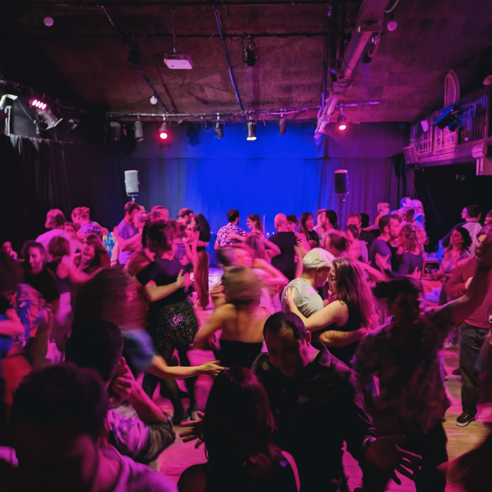

Sundays
Time: - , except the first Sunday of each month
Winter / spring schedule: -
There are lots of opportunities to practice your forró skills, not to mention getting to know the lovely forró community.
Conexão’s regular event rhythm is built around práticas and initiations, with occasional feedback weeks, workshops, and summer formats on top.

We dance to seduce ourselves. To fall in love with ourselves. When we dance with another, we manifest the very thing we love about ourselves so that they may see it and love us too.
Join us for our forró prática: an opportunity to dance, practice, and reconnect.
We now have two práticas per week: Sundays and Wednesdays.
Time: - , except the first Sunday of each month
Winter / spring schedule: -
Time: -
Winter / spring schedule: -
Venue: Salle Dublin
Contribution: voluntary contribution of €3-4
If you have questions, you can write to info@conexao.be.
For live forró concerts and related events in Belgium, you can also follow Be Forró on Instagram.